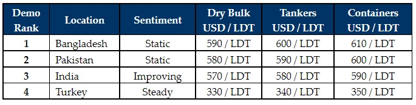

inWeekly Demolition Reports24/01/2022

It has been an increasingly static week in the Indian sub-continent ship recycling markets, especially after some early 2022 optimism displayed by a resurgent India in particular.
Sales on various specialist units soared this past week in Alang – with several stainless-steel chemical tankers, Russian fish factories, and a barge being committed at some extraordinary levels.
Competing markets in both Pakistan and Bangladesh could only sit by and watch, with very few favored large LDT units to work on, and as the holiday season approaches in China and much of the Far East.
Even in Turkey, it remained another relatively stable week, with no material change reported in the severely-depreciated-but-now-stable Lira or even in import / local steel prices.
Overall, demand is certainly ripe across sub-continent locations, but there are still a few vessels needed in the market to satisfy the recent onset of demand, and sub-continent Recyclers usually find themselves competing at above market prices on any of the select units that do become available.
Even steel prices and currencies remain stable-to-positively poised as well, certainly indicating a bullish first quarter of the year (as has historically been the case). Tanker charter rates are still in the doldrums, and it remains to be seen how much longer the ongoing Dry Bulk rally can last.
As such, it is rather peculiar that there is not a greater volume of ongoing negotiations on recycling candidates at the moment. It appears as though most owners will have to wait-and-watch until after the lunar New Year holidays before making any moves and it could well be a slower start to 2022 – especially in terms of sales leading up to mid-February.
For week 3 of 2022, GMS demo rankings / pricing for the week are as below.

📄 Download PDF: 2022-01-24uc_org.pdfSource: GMS,Inc. (https://www.gmsinc.net/gms_new/index.php/web)